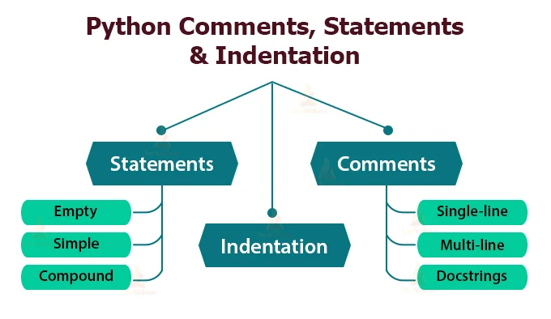
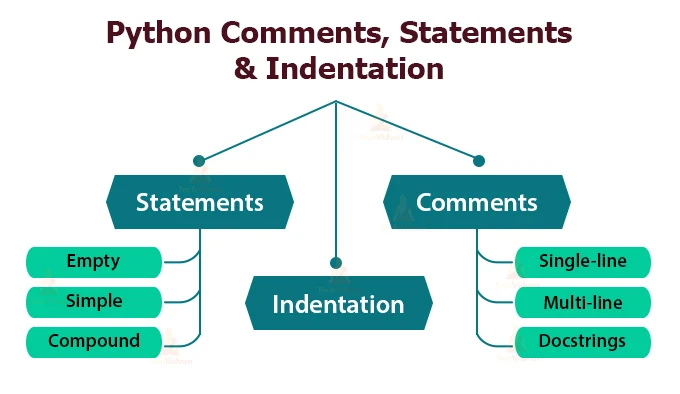

Python เป็นภาษาการเขียนโปรแกรมที่ใช้อย่างแพร่หลายในเว็บแอปพลิเคชัน การพัฒนาซอฟต์แวร์ วิทยาศาสตร์ข้อมูล และแมชชีนเลิร์นนิง (ML) นักพัฒนาใช้ Python เนื่องจากมีประสิทธิภาพ เรียนรู้ง่าย และสามารถทำงานบนแพลตฟอร์มต่างๆ ได้มากมาย ทั้งนี้ซอฟต์แวร์ Python สามารถดาวน์โหลดได้ฟรี ผสานการทำงานร่วมกับระบบทุกประเภท และเพิ่มความเร็วในการพัฒนา
เรียบง่ายและเรียนรู้ได้ง่าย
Python นั้นง่ายต่อการเรียนรู้เมื่อเทียบกับภาษาโปรแกรมอื่น ๆ ไวยากรณ์ตรงไปตรงมาและเหมือนกับภาษาอังกฤษมาก Python นั้นง่ายมากในการเรียนรู้ภาษาเมื่อเทียบกับภาษาอื่น ๆ เช่น C, C #, Javascript, Java และอื่น ๆ การเขียนโค้ดในภาษา Python นั้นง่ายมากและทุกคนสามารถเรียนรู้พื้นฐานเกี่ยวกับ Python ได้ในเวลาไม่กี่ชั่วโมงหรือหลายวัน เป็นภาษาโปรแกรมที่แนะนำสำหรับผู้เริ่มต้น คุณสมบัติหลักของภาษาคือลักษณะรหัสหลอก ช่วยให้คุณมีสมาธิในการแก้ปัญหามากกว่าภาษา
การเขียนโปรแกรมเชิงวัตถุ
Python เป็นภาษาโปรแกรมหลายกระบวนทัศน์ สนับสนุนวิธีการเขียนโปรแกรมที่แตกต่างกัน วิธีหนึ่งที่ได้รับความนิยมในการแก้ปัญหาการเขียนโปรแกรมคือการสร้างวัตถุ สิ่งนี้เรียกว่าการเขียนโปรแกรมเชิงวัตถุ (OOP) เช่นเดียวกับภาษาโปรแกรมวัตถุประสงค์ทั่วไป Python ยังเป็นภาษาเชิงวัตถุตั้งแต่เริ่มต้น ช่วยให้เราสามารถพัฒนาแอปพลิเคชันโดยใช้วิธีเชิงวัตถุ ใน Python เราสามารถสร้างและใช้คลาสและออบเจ็กต์ได้อย่างง่ายดาย กระบวนทัศน์เชิงวัตถุคือการออกแบบโปรแกรมโดยใช้คลาสและวัตถุ ออบเจ็กต์นั้นเกี่ยวข้องกับเอนทิตีในโลกแห่งความเป็นจริงเช่นหนังสือบ้านดินสอ ฯลฯ แนวคิดของโอ๊ะโอมุ่งเน้นไปที่การเขียนโค้ดที่ใช้ซ้ำได้ เป็นเทคนิคที่แพร่หลายในการแก้ปัญหาโดยการสร้างวัตถุ
ฟรีและโอเพ่นซอร์ส
Python เป็นภาษาโปรแกรมโอเพ่นซอร์สฟรีที่พร้อมให้ทุกคนใช้งานได้ นอกจากนี้ยังมีระบบนิเวศที่ใหญ่โตและกำลังเติบโตพร้อมแพ็คเกจโอเพนซอร์สและไลบรารีที่หลากหลาย หากคุณต้องการที่จะดาวน์โหลดและติดตั้งหลามบนคอมพิวเตอร์ของคุณคุณสามารถทำมันได้ฟรีที่python.org Python - มาตรฐานสำหรับภาษาโปรแกรมและ CPython - การใช้งานอ้างอิงของมาตรฐานดังกล่าวได้รับอนุญาตภายใต้ PSFL ซึ่งเป็นใบอนุญาตที่เข้ากันได้กับลิขสิทธิ์ซอฟต์แวร์ฟรีเช่น GPL (ที่จริงแล้วอนุญาตมากกว่า GPL) ซึ่งหมายความว่าเป็นโอเพ่นซอร์สและซอร์สโค้ดสำหรับ CPython มีอยู่ที่เว็บไซต์อย่างเป็นทางการ ไม่มีสิ่งใดที่ป้องกันไม่ให้ใครบางคนนำมาตรฐาน Python ไปใช้เป็นซอฟต์แวร์ที่เป็นกรรมสิทธิ์ได้อย่างไรก็ตามการใช้งาน Python ส่วนใหญ่เป็นโอเพ่นซอร์ส (เช่น Jython, IronPython, PyPy) มีการใช้งานที่เป็นความลับบางอย่างที่เป็นกรรมสิทธิ์
ภาษาระดับสูง
ตามหลักการพื้นฐานของการเข้ารหัสปัจจัยที่ทำให้ภาษาอยู่ในระดับสูงคือระยะห่างจากรหัสไบนารีของเครื่อง จำนวนชั้นของรหัสที่ภาษาอยู่ห่างจาก 0s และ 1s ธรรมดาของเครื่องเป็นสิ่งที่ตัดสินระดับของภาษาโปรแกรมใด ๆ ในทางปฏิบัติ ในโลกของวิศวกรรมซอฟต์แวร์ Python ถูกเข้าใจว่าเป็นภาษาที่มีวัตถุประสงค์ทั่วไประดับสูง ซึ่งหมายความว่าไม่ใช่ภาษาคอมไพล์แบบตรงของคุณ (เช่น Java หรือ C) แต่เป็นภาษาไดนามิกที่ตีความซึ่งต้องรันในระบบที่กำหนดโดยใช้โปรแกรมอื่นแทนตัวประมวลผลภายใน ซึ่งหมายความว่าเมื่อคุณเขียนโค้ดใน Python คุณไม่จำเป็นต้องระวังโครงสร้างการเข้ารหัสสถาปัตยกรรมและการจัดการหน่วยความจำ
ภาษาตีความ
Python เป็นภาษาที่ "ตีความ" ซึ่งหมายความว่าจะใช้ล่าม ล่ามแตกต่างจากคอมไพเลอร์มาก ล่ามจะเรียกใช้คำสั่งของโค้ด“ ทีละคน” ในขณะที่คอมไพเลอร์รันโค้ดทั้งหมดและแสดงรายการข้อผิดพลาดที่เป็นไปได้ทั้งหมดในแต่ละครั้ง นั่นเป็นเหตุผลที่ python แสดงข้อความแสดงข้อผิดพลาดเพียงข้อความเดียวแม้ว่ารหัสของคุณจะมีข้อผิดพลาดหลายข้อก็ตาม เช่นเดียวกับภาษาอื่น ๆ C, C ++, Java และอื่น ๆ ไม่จำเป็นต้องคอมไพล์โค้ดไพ ธ อนทำให้ง่ายต่อการดีบักโค้ดของเรา วิธีนี้จะช่วยให้คุณล้างข้อผิดพลาดได้ง่ายและจะเพิ่มความเร็วในการดำเนินการอย่างแน่นอน
จุดเด่นคร่าวๆ ของ Python
จุดด้อย ของ Python
This article explains the new features in Python 3.12, compared to 3.11. Python 3.12 was released on October 2, 2023
New syntax features: PEP 695, type parameter syntax and the type statement
 
